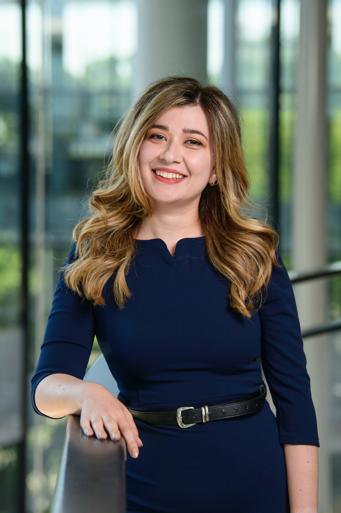

I am an Assistant Professor of Operations Management at Yale School of Management. I am also a Faculty Fellow at the Center for Algorithms, Data, and Market Design at Yale (CADMY).
I am interested in market design and operations for public policy, with a particular focus on education. I use mathematical tools from operations research, economics, and data science to design operational, technological, and policy interventions that optimally balance efficiency and fairness.
Before joining Yale, I was a Postdoctoral Fellow at Harvard University. I received my Ph.D. in Operations Research from the Department of Management Science and Engineering at Stanford University. I hold an undergraduate degree in Electrical and Computer Engineering from National Technical University of Athens in Greece.
For more information, please see my CV.
May 2025: Recently presented our paper "Students Choose Human Counselors Over Algorithms in College Applications, but Not Always" at the Nokia Bell Labs Responsible AI seminar and the University of Michigan Ross Workshop on Unstructured Data and Language Models.
May 2025: Our paper "Why the Rooney Rule Fumbles: Limitations of Interview-stage Diversity Interventions in Labor Markets" was accepted to ACM EC 2025.